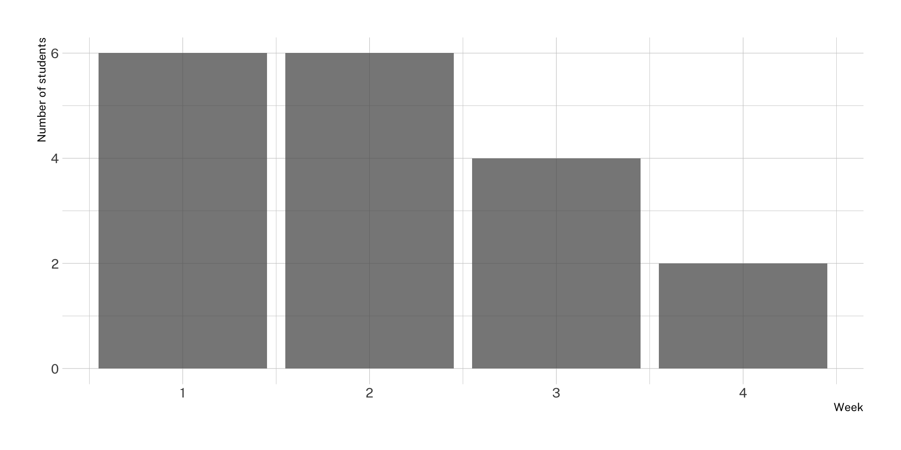

Fall 2023 Weekly Updates
2023-10-04
This Week
Week 6: October 4, 2023
Weekly questions
Geometric and spatial operations
While the concept of a buffer is rather easy to understand for me in other spatial software such as ArcGIS Pro, it was difficult for me to manipulate in R.
storms_sf <- storms |>
st_as_sf(
coords = c("long", "lat"),
crs = 4326
)
storms_tracks <- storms_sf |>
arrange(year, month, day, hour) |>
group_by(year, name) |>
summarise(
avg_wind = mean(wind),
geometry = st_cast(st_union(geometry), to = "LINESTRING")
)
storms_tracksSimple feature collection with 639 features and 3 fields
Geometry type: LINESTRING
Dimension: XY
Bounding box: xmin: -109.3 ymin: 7 xmax: 13.5 ymax: 70.7
Geodetic CRS: WGS 84
# A tibble: 639 × 4
# Groups: year [47]
year name avg_wind geometry
<dbl> <chr> <dbl> <LINESTRING [°]>
1 1975 Amy 46.5 (-48 47, -51.6 44.5, -54.8 42.5, -58 40.5, -78 33.3,…
2 1975 Blanche 45 (-65.2 44, -62.4 47.2, -74.6 32.2, -75 31, -74.9 29.…
3 1975 Caroline 38.9 (-90.1 22.8, -91 22.9, -91.9 23, -92.6 23.1, -93.6 2…
4 1975 Doris 67.1 (-44.6 34.5, -44.9 34.6, -44 35.4, -44 34.9, -44.2 3…
5 1975 Eloise 45 (-81.5 37.5, -82.5 37, -83.5 36.5, -84.3 35.5, -85.7…
6 1975 Faye 68.4 (-46 42.8, -40 42.9, -52 42.3, -57.1 41, -63.7 38.4,…
7 1975 Gladys 66.3 (-36.7 11, -35.8 10.6, -34.8 10.3, -37.4 11.4, -38.2…
8 1975 Hallie 34.6 (-79.4 29.4, -79.7 30, -79.8 30.2, -79.9 30.5, -80.1…
9 1976 Belle 68.1 (-75.2 32.5, -75.3 30.9, -75.3 29.5, -75.1 28.1, -73…
10 1976 Candice 49.5 (-51.2 44.4, -56.4 41.3, -59 41, -59.3 41.2, -68.2 3…
# ℹ 629 more rowsWhat do I mean by “states that intersect Maryland”?
How do you create the map (straight line between MD and CA) using ggplot instead of plot?
Assorted questions
How can I streamline my workflow?
Tidy data questions
Are most built in datasets in R already tidy?
Can functions from the units work with any type of variable?
When might you use both tidyr::pivot_longer() and tidyr::pivot_wider()?
What is the purpose of the .value parameter used in names_to attribute of pivot_longer() function?
How does tidyr::pivot_wider() handle cases with conflicting or duplicate values when pivoting?
Upcoming Updates
Week 7: October 11, 2023
Week 8: October 18, 2023
Week 9: October 25, 2023
Week 10: November 1, 2023
Week 11: November 8, 2023
Week 12: November 15, 2023
Week 13: November 22, 2023
Week 14: November 29, 2023
Week 15: December 6, 2023
Past Updates
These past updates are in reverse chronological order.
Week 3: September 13, 2023
What is due by this week
- Complete required readings for week 3
- Submit response to weekly check-in questions
- Complete Exercise 2 on ggplot2
What is coming up for next week
- Complete required readings for week 4
- Submit response to weekly check-in questions
- Complete Exercise 3 on dplyr and tidyr
Before we start this week
- I want to set up reminders for due dates. How about calendar invites?
- I am considering shifting the exercise due date from Monday to Tuesday. What do you think?
What are you finding interesting
- Ease and speed of plotting spatial data
- Setting colors for plots using
scale_functions from{ggplot} - Customizing plots using
theme_functions from{ggplot} - Similarities and differences between R and Python
What are you finding difficult
-
ggploty()didn’t work as expected - The
countriesdataset from rnaturalearth - When to use the
summarize()function
Your questions this week
{ggplot2} questions
{dplyr} questions
We’ll cover both of these questions today:
- What is
distinct()actually doing? - How do you use the
.beforeand.afterparameters provided formutate()andrelocate()?
Other questions
Check out the Discord for a few answers:
- Can you use R for machine learning with big data?
- How do I access other datasets with the rnaturalearth?
Please post your questions to the Discord!
Things to think about
- What does it mean for data to be part of a knowledge system?
Week 2: September 6, 2023
What is due by this week
- Set up R, RStudio, and GitHub Desktop
- Complete required readings for week 1 and week 2
- Submit response to weekly check-in questions
- Review instructions to complete exercises using RStudio and GitHub
- Complete Exercise 1 on R basics and the structure of sf objects
What is coming up for next week
- Complete required readings for week 3
- Submit response to weekly check-in questions
- Complete Exercise 2 on ggplot2
Before we start this week
- Do you have access to your GitHub repository? Do you understand how to commit changes?
- How can you get the most out of the readings?
- How do you customize your settings in RStudio?
- Where can you get help if you need it?
- What are we doing for the final project?
Your questions this week
- Why do some functions require arguments and other functions do not?
- What are some of the best ways of sharing reproducible methods?
- How do you get data that you create into R?
- What is a vector tile? What is the difference between raster and vector tiles?
- What does the function
ggplot2::aes()and the attributes passed to the function really do? - Do you need to re-install your packages every time you start work?
Reminder: questions are required as part of the weekly check-in.
Week 1: September 6, 2023
- Welcome!
What is due by this week
- Join the Discord chat
Week 4: September 20, 2023
Your questions
How to filter multiple rows from a column?
It all depends on the tests or conditions you pass to filter(). Review the reading on the filter function or check out this optional section of R for Data Science on boolean operations with strings.
How do you set tidyselect helpers to be case insensitive?
Check out the documentation! Look for the ignore.case parameter.
“I would love to run through the code for this bar graph in class, since I don’t totally understand what thought process to use to come up with it.”
Interesting things
We all love filter()! We also appreciate distinct()
“I have been working with R for a while now, in classes and for my own research. The lecture this week and the exercise really helped me understand the application of all the tools to transform data, which was super interesting because I often end up doing selections and filters in ArcGIS Pro or in a csv.”
Difficult things
Answering this question: Which carrier has the worst average delays? Challenge: can you disentangle the effects of bad airports vs. bad carriers? Why/why not?
# flights |>
# replace_na(
# replace = list(
# arr_delay = 0,
# dep_delay = 0
# )
# ) |>
# summarise(
# n_flights = n(),
# n_delay_flights = sum(n > dep_delay),
# mean_arr_delay = mean(arr_delay),
# mean_dep_delay = mean(dep_delay),
# mean_total_delay = mean(arr_delay + dep_delay),
# .by = carrier
# ) |>
# slice_max(order_by = mean_total_delay, n = 10)flights |>
replace_na(
replace = list(
arr_delay = 0,
dep_delay = 0
)
) |>
summarise(
mean_dep_delay = mean(dep_delay),
mean_arr_delay = mean(arr_delay),
mean_total_delay_diff = mean(dep_delay - arr_delay),
mean_total_delay = mean(dep_delay + arr_delay),
.by = carrier
) |>
arrange(desc(mean_total_delay))# A tibble: 16 × 5
carrier mean_dep_delay mean_arr_delay mean_total_delay_diff mean_total_delay
<chr> <dbl> <dbl> <dbl> <dbl>
1 F9 20.1 21.8 -1.67 41.9
2 FL 18.3 19.6 -1.28 37.9
3 EV 18.9 14.9 4.02 33.8
4 YV 17.2 14.1 3.14 31.3
5 WN 17.4 9.47 7.97 26.9
6 9E 15.8 6.91 8.87 22.7
7 B6 12.9 9.36 3.55 22.3
8 OO 11.4 10.8 0.594 22.2
9 MQ 10.1 10.2 -0.161 20.3
10 UA 12.0 3.50 8.46 15.5
11 VX 12.8 1.75 11.0 14.5
12 DL 9.20 1.63 7.57 10.8
13 AA 8.42 0.356 8.06 8.77
14 US 3.66 2.06 1.60 5.72
15 HA 4.90 -6.92 11.8 -2.01
16 AS 5.79 -9.86 15.6 -4.07What is due by this week
- Complete required readings for week 4
- Submit response to weekly check-in questions
- Complete Exercise 3 on dplyr
What is coming up for next week
- Complete required readings for week 5
- Submit response to weekly check-in questions
- Complete Exercise 4 on sf and dplyr (and a little tidyr)
Week 5: September 27, 2023
Your questions
How do I get my own shapefiles into R?
Is there a “best” way to perform specific operations? Or does it depend on individual preference?
There isn’t a “best” way but there are often better and worse ways. If you have more than one way to achieve the same objective in R, you can compare the approaches using a few related considerations:
- Performance (speed and memory)
- Code readability
- Consistency and predictability
This presentation on Styling R Code from Jacob Scott is one of the best resources I’ve seen on the topic.
A few related resources:
- lintr flags when it detects problems in your code.
- styler can help automatically reformat your code.
- Documentation like the tidyverse style guide can inform how you write code.
How can you keep track of what is happening when piping data from one function to another?
The tidylog package is one tool for getting more insight into your pipelines:
library(tidylog, warn.conflicts = FALSE)
mtcars |>
filter(cyl == 4) |>
mutate(new_var = wt ** 2) |>
select(mpg, cyl, new_var) mpg cyl new_var
Datsun 710 22.8 4 5.382400
Merc 240D 24.4 4 10.176100
Merc 230 22.8 4 9.922500
Fiat 128 32.4 4 4.840000
Honda Civic 30.4 4 2.608225
Toyota Corolla 33.9 4 3.367225
Toyota Corona 21.5 4 6.076225
Fiat X1-9 27.3 4 3.744225
Porsche 914-2 26.0 4 4.579600
Lotus Europa 30.4 4 2.289169
Volvo 142E 21.4 4 7.728400Another is {ViewPipeSteps}
The debugging tools built into R and RStudio can also be useful for trouble-shooting in case of errors or unexpected results.
What is the difference between an intensive and extensive variable?
The concept of intensive or extensive variables comes to the world of spatial data from physics and chemistry. The Wikipedia article on intensive and extensive properties provides helpful definitions:
an intensive property or intensive quantity is one whose magnitude is independent of the size of the system (e.g. temperature, hardness)
an extensive property or extensive quantity is one whose magnitude is additive for subsystems (e.g. mass, volume)
What is due next week
Your weekly check-in response!
What is due next week
Readings:
Ch. 6 Data tidying in Hadley Wickham, Garrett Grolemund, and Mine Çetinkaya-Rundel R for Data Science: Import, Tidy, Transform, Visualize, and Model Data, 2nd edition (WIP). (Sebastopol, CA: O'Reilly Media, 2023), https://r4ds.hadley.nz/.
Ch. 20 Joins in Wickham, Grolemund, and Çetinkaya-Rundel R for Data Science.
Karl W. Broman and Kara H. Woo "Data Organization in Spreadsheets," The American Statistician 72, no. 1 (January 2, 2018): 2–10, doi:10.1080/00031305.2017.1375989.